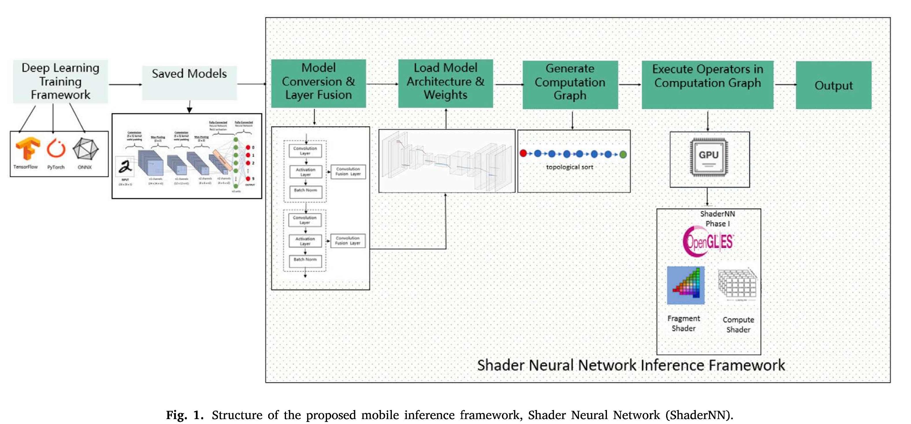
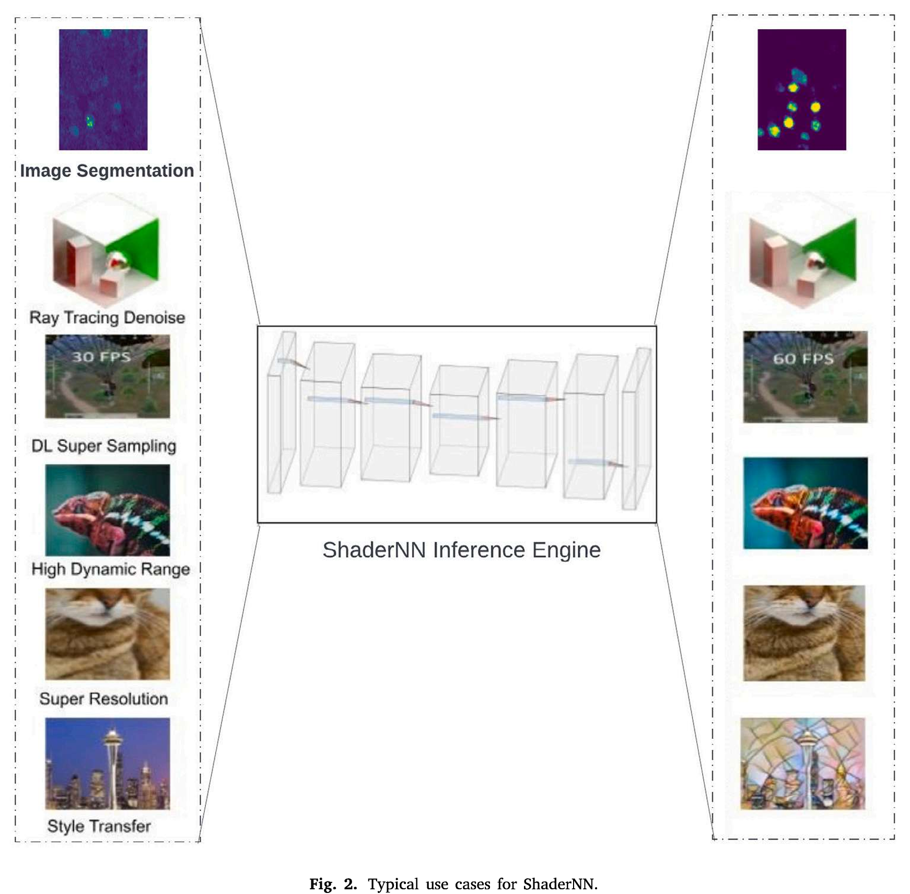

Accelerating HDC-CNN Hybrid Models Using Custom Instructions on RISC-V GPUs #
https://arxiv.org/abs/2511.05053
概念 #
Hyperdimensional Computing (HDC)：超维计算是一种受大脑工作机制启发的类脑计算范式，它使用极高维度（通常2,000-10,000维）的随机向量来表示和处理信息。其核心思想是：将任何实体（如图像、声音、文本、概念等）编码成高维空间中的向量，利用高维空间的数学特性实现高效的认知操作。与传统计算不同，HDC的信息是全息分布式存储的——信息均匀分布在超向量的每个元素上，而非集中在特定位置。
高维空间的特性
- 准正交性：任意两个随机生成的超向量几乎相互正交（相似度≈0），这意味着高维空间有足够容量表示海量概念
- 鲁棒性：即使30%的维度被噪声污染或损坏，仍能可靠识别原始信息
- 相似性度量：对于二值向量使用汉明距离（不同位数），实数向量使用余弦相似度
三种基本操作
| 操作 | 符号 | 定义 | 特性 |
|---|---|---|---|
| 捆绑/加法（Bundling） | ⊕ |
逐位多数表决（或带阈值的累加） | 结果与输入向量相似 |
| 绑定/乘法（Binding） | ⊗ |
逐位XOR（异或） | 结果与输入向量不相似（准正交） |
| 置换（Permutation） | ρ |
坐标位置循环移位 | 用于表示时序或结构关系 |
关键性质：绑定和置换可逆，捆绑近似可逆；乘法对加法满足分配律。
| 优势维度 | 具体表现 | 与传统AI对比 |
|---|---|---|
| 计算效率 | 仅需逐位运算，无复杂乘加 | 比神经网络快10-100倍 |
| 能耗 | 极低功耗，适合边缘设备 | 功耗降低可达3个量级 |
| 训练速度 | 单次遍历，在线学习 | 无需反向传播，训练时间秒级 |
| 鲁棒性 | 抗噪声、硬件故障 | 30%损坏仍保持90%准确率 |
| 可解释性 | 运算可逆，可追踪决策 | 打破神经网络黑盒 |
| 硬件友好 | 可用简单数字逻辑或存算一体实现 | 无需高端GPU/TPU |
文章核心内容 #
HDC对于我来说还是一个很新鲜的内容。相比深度学习的矩阵运算，HDC具有更低的复杂度，单次训练，在线学习能力，无需反向传播。但是这种方法的可靠性仍然需要进一步的研究。在复杂度较高的数据集上，准确率仍然不足。
这篇文章简单的说实现了"支持HDC自定义指令的RISC-V GPU架构扩展" ，并在模拟器上验证了其性能增益。传统CPU和GPU架构计算HDC比较困难。因那次他们设计了一种新的架构可以高效执行HDC与混合模型。
所谓HDC-CNN的混合模型，它的原理仍然是通过CNN来提取特征，通过HDC进行分类。这个做法看起来只是把普通的CNN的分类器换成了HDC，但是实际上这种混合网络只保留了1-2层浅层卷积，深层卷积以及之后的所有层，意味着大部分的参数都是HDC。
HDC上的分类任务被分成了三个阶段：
- Encoding阶段，输入数据被转换成超维向量 HV
- Training阶段，class HV通过数据HV的关系被学习出来
- Inference阶段，比较encoded输入和class HV之间的关系
说实话，这种方法看起来有点像聚类。HDC可视为一种 “基于随机投影的极简聚类” ，它用高维空间的数学性质替代了迭代优化过程。但底层数学原理和计算范式有本质区别。
Encoding方法有很多种。包括Random Projection和Locality-based Sparse Random Projection。训练的方法就是进行同属于一个class的HV进行投票，得到一个class HV。推理阶段就是比较和class HV的汉明距离。
说实话，HDC这个概念看起来并不神奇。可能我还是对他们怎么把硬件和它结合到一起更感兴趣。
Custom GPU #
他们的方法 proposes a custom GPU architecture that supports HDC operations via custom instructions, enabling efficient processing of both HDC and CNN based machine learning models. 这一方法的基础是RISC-V ISA以及开源的Vortex GPGPU。
传统RISC-V GPU每个线程只有32个32位通用寄存器，因此在处理HDC操作时内存-寄存器传输成为瓶颈。因此，作者的操作是引入了32个专用累加寄存器。
文章看到这里基本就不用再看了。他们的工作和我的方向完全不一样。
总结 #
这篇文章主要是让我了解了一下什么是HDC，以及现在HDC-CNN的模型大概是什么样的。这篇文章本身在我看来并没有太多的可取之处。
ShaderNN #
这篇文章是OPPO的移动端AI框架。与之类似的还有腾讯的NCNN等框架。这篇文章比较吸引我的一点在于它是首个基于OpenGL的混合shader推理框架。通过纹理级数据操作实现移动设备上图形/AI应用的无缝继承。
之前我一直在思考一个问题，边缘端设备之间存在严重的异构性问题，这为边缘端设备的部署带来了极大的局限性。那么问题来了，这些边缘端设备之间是否存在一个最大公约数呢？显然，最大的公约数就是CPU，只要将模型转换成机器，总是能够在CPU上运行。但是CPU的算力不足以支撑较大的模型运行。所以我在考虑，除了CPU，是否有其他公约数呢？我的答案是，它可能存在，就是OpenGL，或者说类似Vulkan这样的图形库。即便GPU不支持CUDA，但它一般都支持这一类图形库。
话虽然这么说，但是实际上，目前在边缘端设备上部署NPU才是最合适的做法，所以我觉得这一公约数其实也并不好用。因此，显然目前的边缘端设备中是不存在最大公约数这一说的。
不过我还是想看看OPPO是怎么使用OpenGL来实现AI推理的，看看它是否可以为我带来一些新的思路。
概念 #
Motivation #
移动设备上神经网络推理面临以下关键问题：
- 数据移动开销大：现有框架在GPU纹理与CPU内存间频繁拷贝数据，严重影响实时性能
- 图形集成困难: 游戏、视频处理等图形应用难以与AI推理引擎高效整合
- 功耗限制: 移动设备电池容量有限，需要高能效解决方案
- 硬件碎片化: 不同GPU架构需要针对性优化
这篇文章的核心贡献在于
- 纹理级I/O: 直接操作GPU纹理，实现与图形管线的零拷贝集成
- Fragment Shader推理: 首次将片段着色器用于神经网络算子，在小模型上优势显著
- 混合shader架构: 支持层级别的shader选择，灵活组合compute shader与fragment shader
- OpenGL特性优化: 利用归一化、插值、纹理填充等原生特性提升性能
这篇文章的贡献点看上去非常nice，几乎说正是我想要的边缘端设公约数。但是还需要看看它具体是怎么做的。
需要提到的一点是Compute shaders早已被一些如TensorFlow Lite的框架所使用，而这篇文章则首次用到了Fragment Shaders。有人以及讨论过使用fragment shader和vertex shader 来实现矩阵乘的可能性。原文引用编号16。
目前ShaderNN专门为Android设计。大多数Android手机，运行GPU的可选项是OpenGL，Vulkan和OpenCL。OpenGL是最常用的。另外，ShaderNN是专门用来处理图像的。
ShaderNN 架构 #

shaderNN包含四个步骤：
- model conversion
- model loading
- computational graph generation
- operator execution
显然shaderNN和一般的inference框架是类似的。它们的核心主要在第三步上，在计算这一步，基于OpenGL后端的fragment shader和compute shaders将会参与到计算当中。

关键技术1：统一数据结构 #
对于同时包含图像渲染和机器学习的任务，传统推理引擎将图形管线和AI推理引擎分开，二者无法直接互通，存在数据转换的问题。shaderNN统一将所有层级的输入/输出张量统一为GPU纹理对象。
关键技术2：层融合 #
在计算图层面的静态优化策略，通过算子融合减少计算量和内存访问开销。
若某层为逐元素操作或者MAP函数，则该层可以与前一层数学上合并为一个算子。shaderNN支持三类融合
- 激活层融合，将激活函数直接嵌入卷积的shader代码
- 批归一化层融合，将BN的缩放，偏移和方差合并到卷积权重，或者在推理时直接移除BN层，将其统计量永久融入前层权重，节省一次完整算子调用。 -填充层融合，利用OpenGL Sampler对象的自动填充特性。
层融合带来极高的优化效果：
- 每融合一层就减少一层完整的OpenGL绘制调用
- 降低Kernel启动开销，单词shader launch替代多次
- 提升数据局部性，中间结果无需写回纹理，直接在shader寄存器链式计算
- 节省内存带宽，消除中间张量的读写操作
融合时在model preparation step完成的。
算子融合这一概念并不新鲜。但是shaderNN的算子融合能与OpenGL联合到一起确实很有意思。看起来一个算子就对应着一个shader程序。